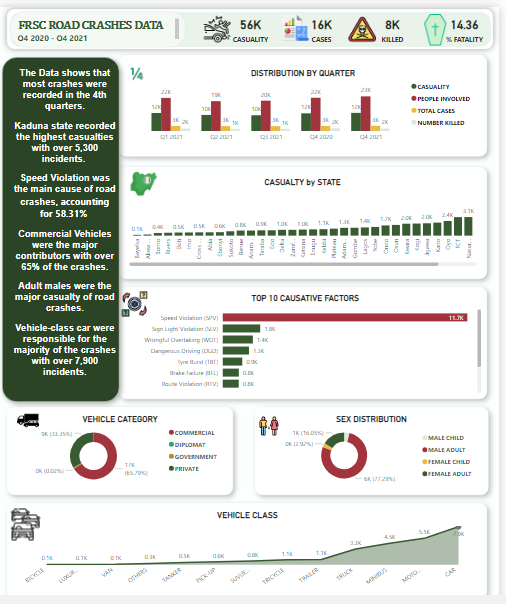

Power BI / FRSC / Q4 2020 to Q4 2021
Nigeria: road crash patterns
An exploration of recorded crash factors, vehicle categories and casualties to support targeted safety questions.

Business question
Which recorded factors and vehicle groups warrant closer road-safety attention? The published project covers Federal Road Safety Commission data from Q4 2020 through Q4 2021.
Approach
The Power BI dashboard compares quarter-year periods, reported causative factors, states, vehicle categories and demographic groups. This write-up interprets the published static visual and keeps crash cases, casualties and deaths as separate measures.
What the dashboard shows
Headline cards display approximately 16K cases, 56K casualties and 8K killed. Speed violation is the largest recorded factor, at about 11.1K in its chart. Commercial vehicles account for about 65.8% of the vehicle-category breakdown. Adult males form the largest group in the demographic chart.
Recommended decisions
Prioritize a closer review of speeding-related records and commercial-fleet safety practices. Compare individual quarter-year periods to locate peaks before planning campaigns. Combine state counts with traffic exposure and consistent reporting coverage before allocating resources. Track subsequent changes with clearly defined crash and casualty measures.
Interpretation limits
The 56K headline is labelled Casualty, not crash incidents. The 14.36% Fatality card is not used as a population fatality rate because its denominator is not documented. Recorded factors may overlap and do not prove a single causal mechanism. The window includes two fourth quarters; pooling both against one of each other quarter would distort seasonality. Vehicle-category percentages do not measure the risk per journey.
Source: My original Maven Showcase project ↗. Analysis accompanies the published dashboard; source workbooks are not included.